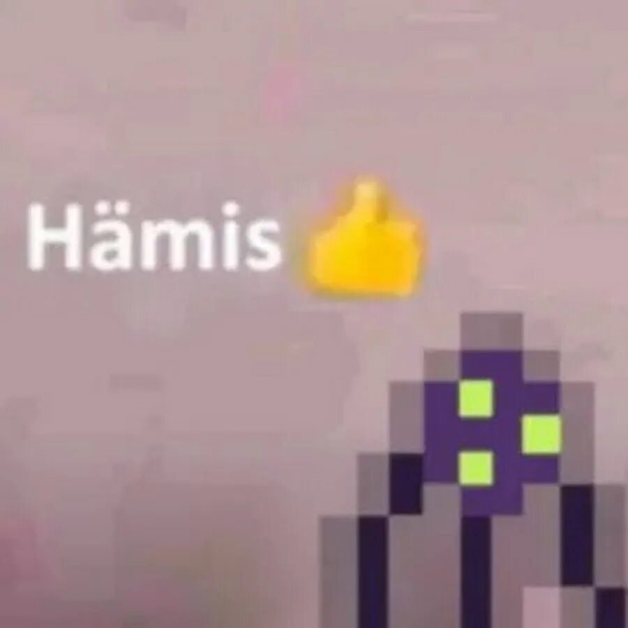

Besiege — это физическая песочница и инженерный симуляторгде игроки конструируют средневековые осадные машины для разрушения замковуничтожения армий и прохождения головоломок. Игра отличается блочным строительствомреалистичной физикойподдержкой многопользовательского режима (мультивселенная) и творческой свободой в создании механизмов. Википедия Википедия +4 Основные характеристики Besiege: Геймплей: Строительство машин из блоков (деревоколесаоружиекрылья) и их испытание на разрушаемых картах. Цели: Разрушение мельницкрепостейубийство солдатпреодоление препятствий. Режимы: Одиночная кампания (набор уровней) и мультиплеер (кооператив и сражения). Особенности: Поддержка мастерской Steam (сотни тысяч машин)продвинутый редактор уровней. Welcome to Steam Welcome to Steam +6 Игра вышла в полном релизе в 2020 году и получила крайне положительные отзывы за свою уникальную физику и инженерный потенциал.